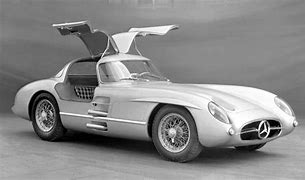
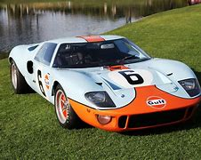
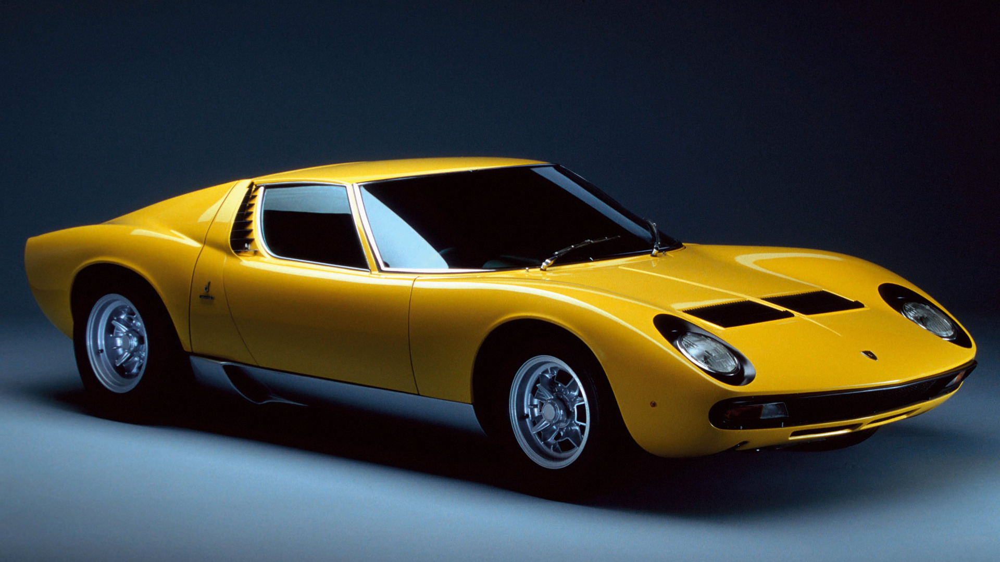
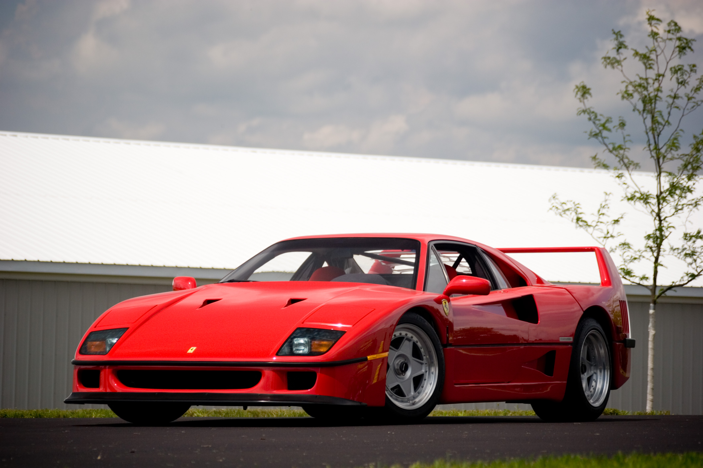
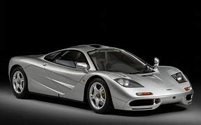

Superdeportivo
Un superdeportivo es un instrumento especializado construido para la velocidad, pero no necesariamente para las carreras. El superdeportivo a menudo no tiene las características de seguridad necesarias para una experiencia de carrera verdaderamente segura
Cuentan con un rendimiento superior, muy adelantado a sus contemporáneos.
Los 5 superdeportivos antiguos mas bellos
- Mercedes Benz 300 SLR Uhlenhaut Coupe

- Ford GT40

- Lamborghini Miura

- Ferrari F40

- McLaren F1
